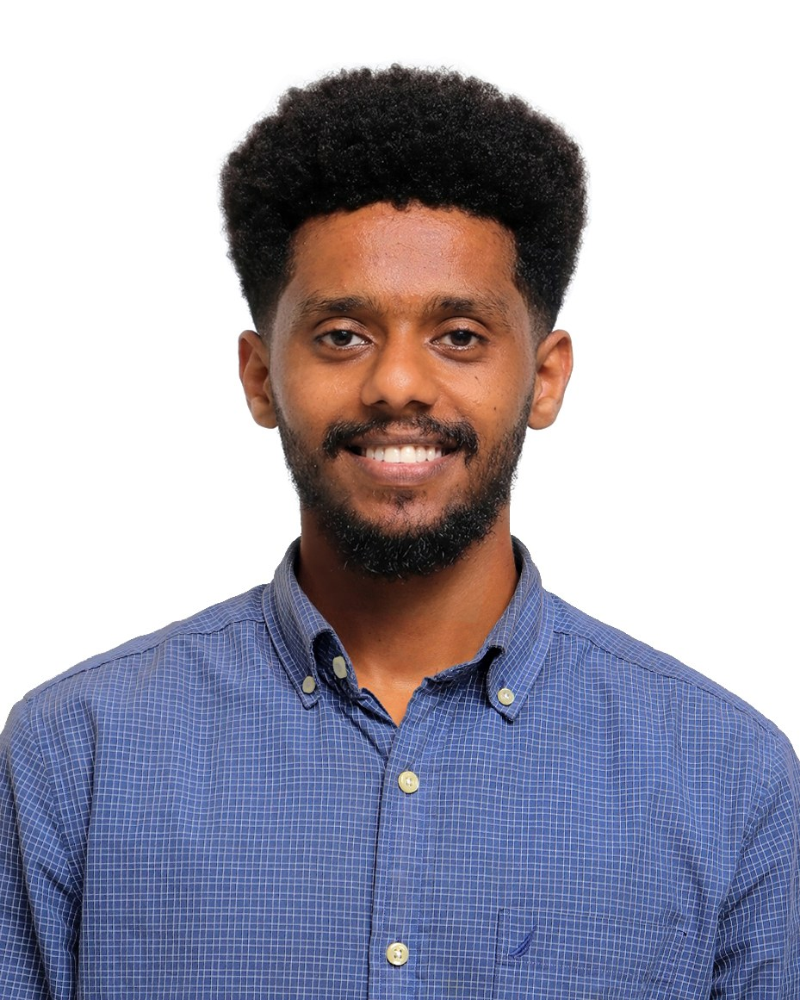
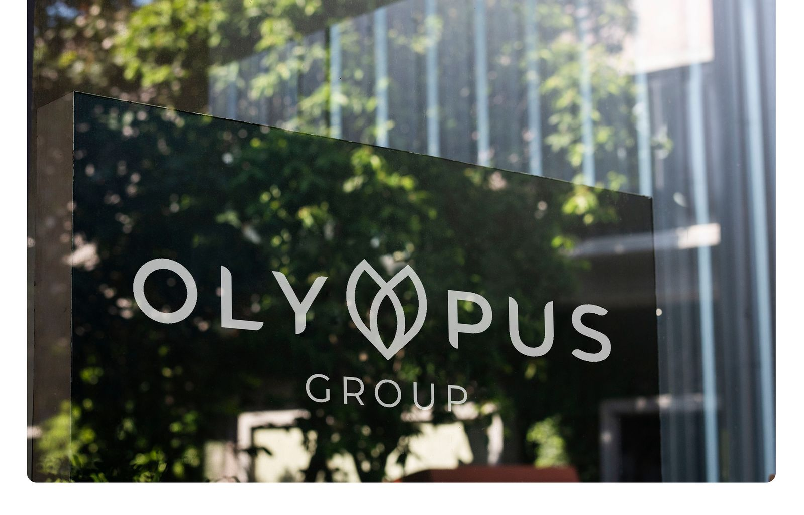
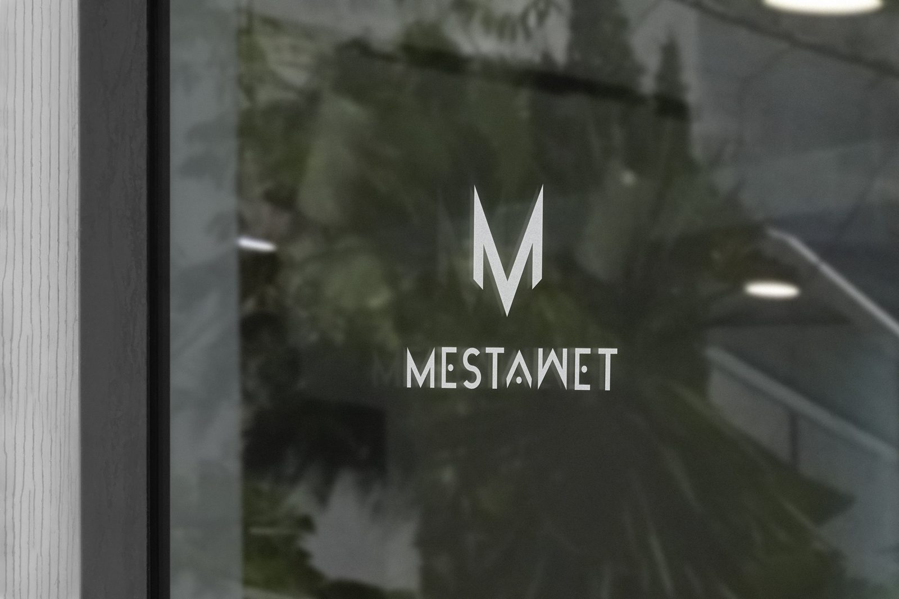
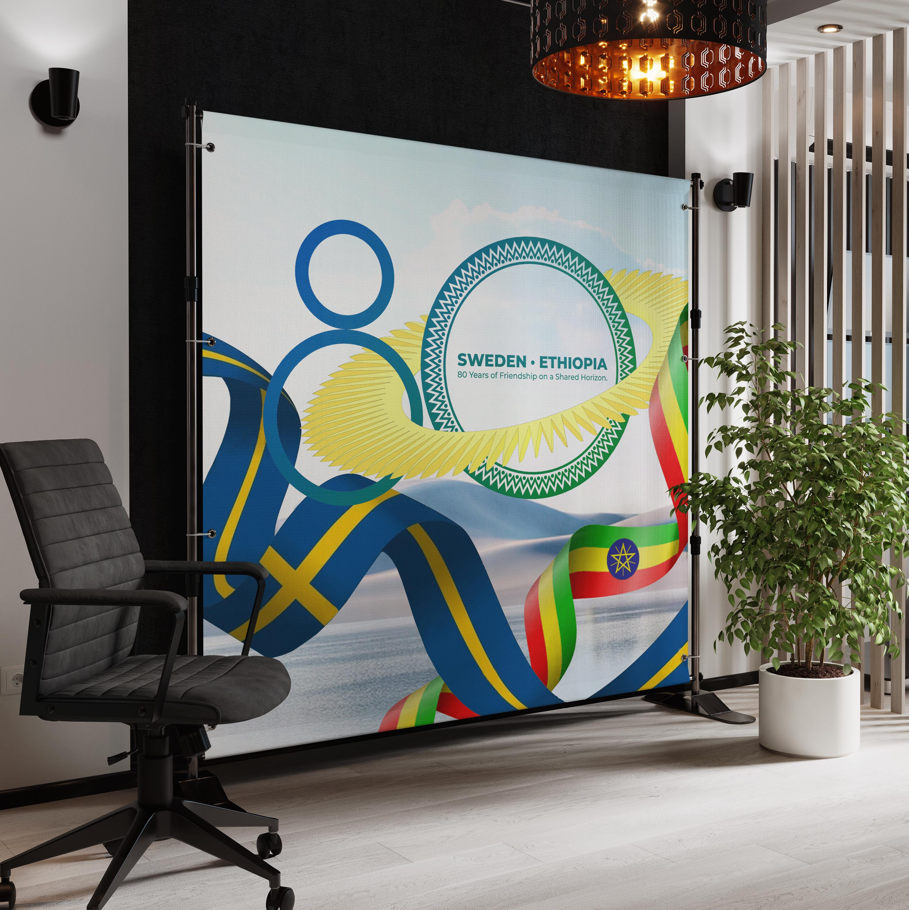
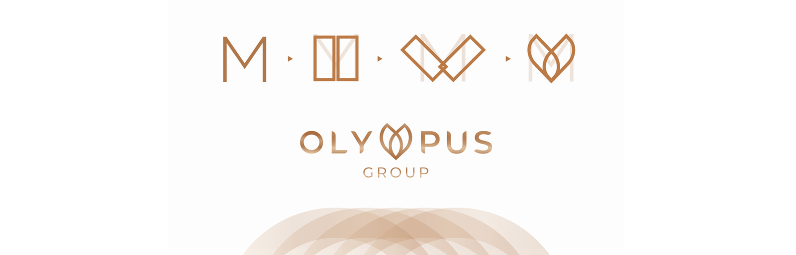
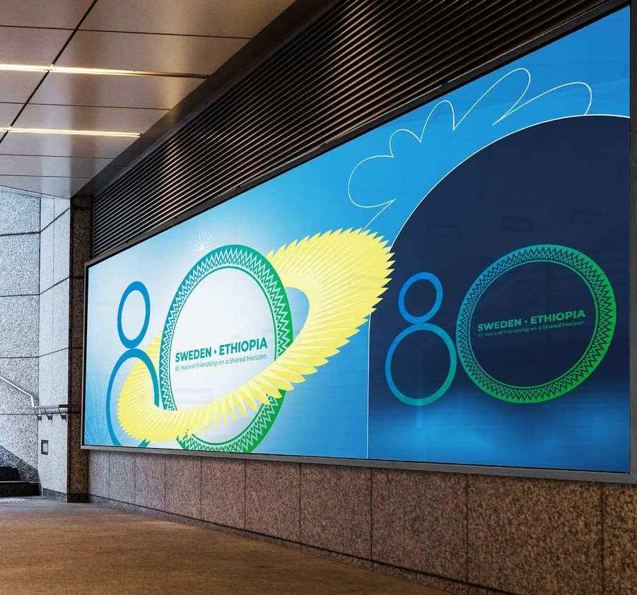

Think
Frame the problem, model the system, decide what matters.
→ Strategy / AnalyticsBeamlak Belay moves between strategy, analysis, brand identity and visual craft — using structured thinking and applied technology to turn fragmented problems into legible systems.

Every project moves through a different balance of strategy, making and implementation. The point is not to pick a discipline. It is to connect them.
Frame the problem, model the system, decide what matters.
→ Strategy / AnalyticsTurn complexity into visual language, hierarchy and narrative.
→ Brand / CampaignShip systems, experiences and tools that make the idea usable.
→ Digital / Spatial / Technology


A demonstration of analytical method: defining fragmentation, testing hypotheses, modelling scenarios and setting decision rules before any solution gets designed.
A unified multi-channel out-of-home concept built for a job-application design challenge. Shortlisted to interview — never a live campaign.


A vector identity built on construction logic — from one letterform through structural grid alignment and 45° rotational symmetry to signage.

A self-directed identity. The visuals shown here are mockup visualizations, not installed photography.

A commemorative identity synthesizing two national visual languages into one system. Submitted as a concept entry — not an adopted identity.

Small working tools where systems thinking and visual design meet.
Spatial reasoning
Constraints as design input
Coordination across disciplines
Designing for real user needs
Visual communication under scrutiny